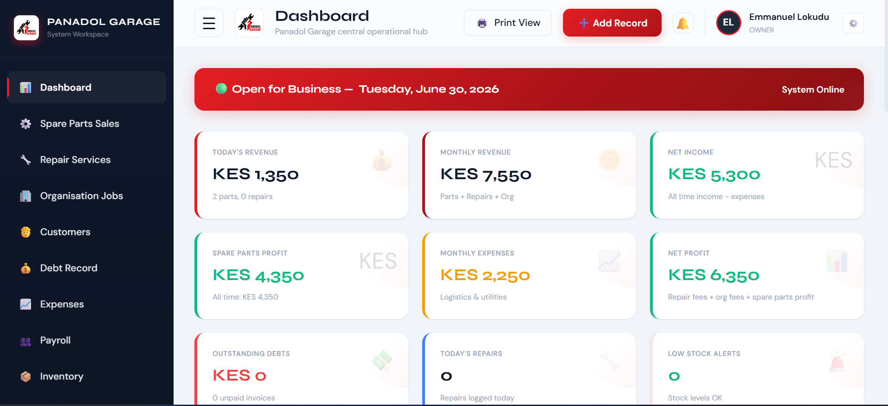

Case study · Web application
Panadol Garage Management System
A focused business system that brings repairs, customers, invoices, payments, stock and daily records into one place.

Project overview
Built around daily garage work.
Panadol Garage needed a clearer way to keep operational information together. Emmanuel’s role covered understanding the workflow, designing the interface, building the system, setting it up and training the team.
The original problem
Important records were difficult to manage consistently.
The project centered on the everyday information a garage relies on: jobs, customers, payments, stock and business records. The goal was a useful operational tool, not a generic dashboard.
Process
Understand, simplify, then build.
- Discuss the garage’s daily workflow and priority records.
- Group related tasks into clear modules and navigation.
- Design a dashboard for quick operational visibility.
- Build and test the responsive management interface.
- Set up the system and train the team.
Final solution
One practical operational workspace.
- Repair and job records
- Customer information
- Invoices and payments
- Inventory tracking
- Daily expense records
- Business reporting
Technology & tools
Responsive web application.
The delivered work is a browser-based management system with a responsive interface. A detailed technical stack has not been published and should be added only when Emmanuel confirms it.
Verified outcome
Easier daily operations and record keeping.
“The app has made it much easier for us to manage our daily operations, improve record keeping and run the garage more efficiently.”
Bashiri Juma Omari
Founder & CEO, Panadol Garage
No percentage improvement or revenue result is claimed because those figures have not been supplied.
Planning a practical business system?
Start a project